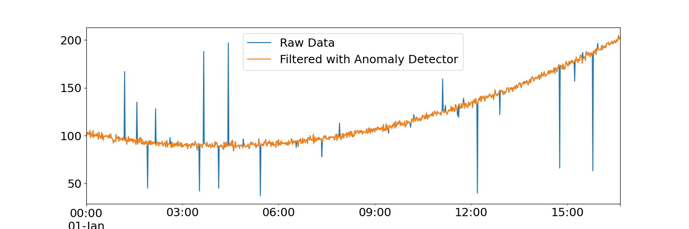

Note
Click here to download the full example code
Extreme Outliers Removal
Example of point outlier removal with polynomial regression and Studentized residuals. We generate a toy data set with an underlying polynomial signal that has Gaussian noise and large point outliers added to it.
In the figure below, it can be seen that the point outliers are filtered out from the raw data. This data can then be subsequently processed with a smoother to refine the underlying signal if desired.
import matplotlib.pyplot as plt
import numpy as np
import pandas as pd
from indsl.data_quality import extreme
rng = np.random.default_rng(12345)
plt.rcParams.update({"font.size": 18})
# Create Toy clean dataset
nx = 1000
index = pd.date_range(start="1970", periods=nx, freq="1T")
x = np.linspace(0, 10, nx)
signal = 2 * x**2 - 10 * x + 2
noise = np.random.normal(loc=100, size=nx, scale=2)
y = noise + signal
# Add anomalies
anom_num = rng.integers(low=0, high=200, size=20)
anom_ids = rng.integers(low=0, high=nx, size=20)
y[anom_ids] = anom_num
is_anom = [item in anom_ids for item in range(nx)]
raw_data = pd.Series(y, index=index)
# Find anomalies and plot results
res = extreme(raw_data)
plt.figure(1, figsize=[15, 5])
raw_data.plot()
res.plot()
_ = plt.legend(["Raw Data", "Filtered with Anomaly Detector"])
Total running time of the script: ( 0 minutes 1.607 seconds)